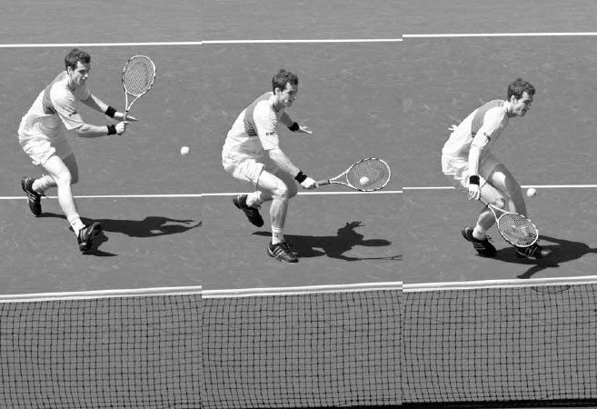

Drop Shot and Lob¶
The drawback to the drop shot and lob is that if they are not played well or are played at the wrong time, you are likely to lose the point. Thus, they can make you look brilliant or foolish. The advice below will help you stay on the positive side of the drop shot and lob ledger to make these two shots a significant and successful part of your game.
I. Drop Shot
THE DROP SHOT IS A SOFT SHOT that lands close to the net and bounces low. The goal of the drop shot is either to make the ball bounce twice befoe your opponent can reach it or, if your opponent does run it down, to leave them off balance and vulnerable to a passing shot or lob.
Frequent use of the drop shot can wear your opponent down physically and mentally. If you see your opponent breathing heavily after an intense rally or becoming frustrated, look to use your drop shot. It is a shot that can both prey on an opponent's movement and emotions and also be used strategically to draw defensive baseline players out of their comfort zone and up to the net.
1. TECHNIQUE
The drop shot swing is similar to the slice groundstrokes in its use of the continental grip and body positioning. Like the slice groundstrokes, it can be hit in any stance, although the neutral or closed stance works best, especially if you are moving forward to play the drop shot (as is usually the case). However, there are technique differences: the backswing and follow through are shorter, the forward swing more downward, the racquet face opens more, and the step forward less aggressive (left).

Using a light forward step and a short, downward swing, Federer plays this drop shot with heavy spin.
To play a drop shot, begin by setting up the racquet above the ball with an open face and then move the racquet forward and carve down and underneath the ball (opposite). This will cause the ball to spin backwards and stop quickly. After contact, follow through with your racquet face continuing to open and dropping below the wrist.
COACH'S BOX: Somewhat paradoxically, even as tennis has become a more powerful game, the drop shot has become a more important shot for three reasons. First, players are standing increasingly farther behind the baseline to defend against the increased speed of modern groundstrokes, creating more opportunities to use the short part of the court for an effective drop shot. Second, because players are now moving so fast laterally to cover wide shots at the baseline, the short part of the court has become a more appealing area to find an advantage during the rally. Third, frequent use of the drop shot can change an opponent's court positioning and reduce their ability to cover the court --- an important consideration against the speedy modern player. As Federer, who has used the drop shot more frequently later in his career, has said, "I just realized it was very hard to hit through the guys time and time again, because they track down everything. Maybe by using the drop shot more they have to play closer to the baseline; then it's easier to hit through them." (1) Djokovic drop shots by rotating the racquet head down and sliding the strings underneath the ball.
2. DISGUISE
Keep in mind that deception is an important component of the drop shot. The more you can fool your opponents and delay their anticipation, the more successful your drop shot. Advanced players often disguise their drop shot by winding up like they are going to drive the ball and then quickly change their grip to play a drop shot. Recreational players may not be able to conceal a drop shot like this, but any trickery that makes a drop shot harder to read should be embraced. To maintain the element of surprise, it is also important not to overuse the drop shot; use it sporadically and when your opponent least expects it.
COACH'S BOX: To learn the drop shot, I sometimes ask my students to play a game of "Catch and Release." With you and your practice partner on opposite baselines, have your partner hit a ball to you. Using the drop shot technique, tap the ball in the air a few feet in front of you (catch), let the ball bounce, and return the ball back to your partner (release), who does the same thing. This game helps players learn the "feel" of hitting the ball the short distance required on the drop shot.
3. SHOT TRAJECTORY AND RESPONSE
The trajectory of the drop shot will vary depending on the height at which it was hit, but most drop shots should rise up initially before dropping down as the ball crosses the net. A higher trajectory gives the ball a better chance of stopping due to backspin, and greater net clearance makes it a higher percentage shot. If you've played a good drop shot, move forward because your opponent's shot likely will be short. If they pop the ball up, you will be well-positioned to end the point quickly with a volley. If your drop shot is poor, however, move back and get ready to hustle and defend the point.
4. WHEN TO DROP SHOT
Choosing the right time to play the drop shot is a key factor in its chances of success. Things to consider when deciding whether to play a drop shot include:
A. BALL HEIGHT
The drop shot is best hit when you receive a waist-to-chest high ball. It is hard to control a drop shot on a ball any higher or lower than this. Also, because time and disguise are important factors, you should hit the drop shot as the ball is rising or at its apex rather than on its way down. If you hit the ball on the way down, you allow your opponent more time to react and decrease your ability to disguise the shot.

Murray hits this drop shot with the recommended balance, ball height, and court positioning.
B. BALANCE AND TIME
The drop shot is a skilled shot and requires a reasonable amount of balance and time to play well. Therefore, avoid playing drop shots when you are off-balance or receiving a fast ball.
C. COURT POSITIONING
Generally, it is best to hit the drop shot while positioned around the service line or closer to the net. If you play the drop shot from deep in the court, your opponent will have more time to run it down.
D. COURT SURFACE
On softer court surfaces, like clay, slice shots bounce lower and react more to backspin --- favorable conditions for drop shots. In contrast, on harder court surfaces, drop shots bounce higher and grip the court less, making it more difficult to hit an effective drop shot.
II. Lob
THE LOB IS A SHOT HIT DEEP and high in the court. A deep lob will force your opponent to hit an off balance overhead or, better still, to let the ball bounce, allowing you to gain control of the point. Besides presenting your opponent with a difficult overhead or a scramble to run the ball down, good lobbing has strategic advantages. It can lead to less aggressive net positioning from your opponents. If your opponent is concerned about having to defend against your lob, they may deepen their net position, thus reducing their volley angles, increasing the time you have to react to their shot and forcing them to hit more low, difficult volleys.
There are two types of lob: defensive and offensive.

Disguising the lob is important. If you were playing Djokovic, would you be able to tell a lob was coming at the time of the first frame?
1. DEFENSIVE LOB
The lob is often used in defensive situations when you are scrambling or unable to get balanced to set up for an aggressive groundstroke. The defensive lob can be hit with a short swing and therefore doesn't need a lot of time to execute if you are rushed or under pressure.
The stroke production on a defensive lob is similar to a slice groundstroke except that the racquet face is more open and the swing is shorter with a more upward plane (below). The height required on a lob depends on the circumstances. If you are caught wide off the court, you may try to hit the lob very high in order to buy some recovery time (below). If you are well-positioned, your lob can be lower. When hitting a defensive lob, the ball should reach its apex over your opponent's service line. Many players focus on lobbing the net player and this makes the high point of the lob occur over the middle of the service box, resulting in a comfortable overhead for your opponent. Instead, if the lob reaches its highest point over the service line, you will force your opponent to backpedal into a defensive situation. Also, try to aim the defensive lob over your opponent's backhand side because the backhand overhead is a very difficult shot.
2. OFFENSIVE LOB
If you have more time to set up, the lob can also be used offensively and hit with topspin, whereby once the ball clears the opponent at the net, it jumps towards the back fence after the bounce for a winning shot. Your goal with the topspin lob is to win the point outright, but if it lands shorter, its dipping trajectory can make it a difficult overhead for your opponent to hit.

Roberta Vinci opens the racquet face and hits a high lob to allow her time to recover.
The topspin lob requires a sharp upward lift and rotation of the racquet head.
The backswing on the topspin lob looks similar to a regular groundstroke, making it a shot that can be well disguised to fool your opponent. After the backswing, the racquet head drops well below the ball (opposite, top left) and then takes an almost vertical lift to create the necessary spin and height (opposite, top right). This sharp lift of the racquet results in your body weight being more evenly distributed during the swing and the contact point being less in front of the body compared to a regular groundstroke. The stroke ends with a shorter follow through, often finishing on the same side of the body where contact was made.
III. Drop Shot and Lob Practice
1. RALLY AND DROP SHOT
Goal: Learning to hit the drop shot at the right time during a rally.
Draw or mark a line six to eight feet inside the baseline across both sides of the court. With you and your practice partner standing on opposite baselines, start the point with a forehand feed and rally. Both players have the option to play a drop shot to score extra points, but only when positioned in front of the drawn line. The point ends once a drop shot is played. If a player's drop shot bounces twice before the service line, that player scores two points (or three points for three bounces). If the drop shot is an error or only bounces once before the service line, the other player scores two points. The first player to 21 points wins the game.
2. MINI TENNIS
Goal: To develop the good ball control needed for accurate drop shots.
Using the service line as the baseline, start with a forehand to your practice partner and play the point. All shots must be hit with slice and after the bounce. The first player to 15 points wins the game.
Variation: Shrink the court to one service box for each player instead of two, or allow each player one or two volleys per point.
3. LOB AND OVERHEAD
Goal: Improve the lob and overhead.
Begin the game at the service line with your practice partner at the baseline. Using the half court to hit either cross court or down the line, your practice partner begins the point with a lob. Then, play out the point. The first player to 15 points wins the game and then switch roles.
Variation: Have the net player stand in different locations to begin the point or require the baseline player to lob every other shot.
4. DRIVE, DRIVE, LOB
Goal: Improving aggressive groundstrokes to take control of the point following the lob.
Begin the game at the service line with your practice partner at the baseline. Using the half court to hit either cross court or down the line, start the point by feeding your practice partner, who must drive their first two shots and lob the third. The point begins only after the lob is played. After you overhead the lob, the whole singles court becomes available for both players. If your practice partner hits a winner or unreturnable shot off your overhead, they score two points. First player to 15 points wins the game, and then switch roles.

The quality of this Andy Roddick approach shot will largely determine his level of success at the net.